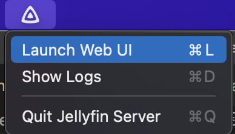
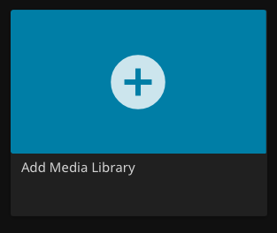
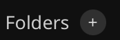

Jellyfin
Info
Jellyfin is used to serve media content, manage and record live TV content, and more.
Download
Download the latest version of installer/jellyfin_x.x.x.dmgfrom https://repo.jellyfin.org/releases/server/macos/versions/stable/installer/
Open downloaded file, drag Jellyfin to Applications folder
Add to Login Items
Add Jellyfin to Login Items
macOS System Settings -> General -> Login Items
{kind=link}
{kind=link}
Open Web UI
Click the
icon in the menu bar and choose 'Launch Web UI'

{kind=link}
{kind=link}
Setup Jellyfin
- Default settings
- Create a primary Admin user
Configure Libraries
-
Click "Add Media Library"
 -
Choose "Content Type" -> content type of your folder (likely 'Movies' or 'Shows')
- Click + 
- Add the folder that contains the specified Content Type files
- Repeat for other libraries
{kind=link}
{kind=link}
Live TV Configuration
(click to expand)
Static IP address:
-
Find HDHomeRun MAC address at http://hdhomerun.local/system.html.
Info
If this URL is not working, first locate the IP address of HDHomeRun on modem Web UI at http://192.168.0.1/modemstatus_landevicelist.html and use the IP Address instead of
hdhomerun.local -
In modem settings -> Advanced Setup -> DHCP Reservation:
Enter (or choose) the MAC address and set a static IP (whatever IP was already set on the HDHR system menu web page)
Setup Live TV
Follow the "Manual Setup" directions located at: https://jellyfin.org/docs/general/server/live-tv/setup-guide.html
To find the IP address of the HDHomeRun, go to the web UI at http://hdhomerun.local/system.html
Once setup, change recording paths in Dashboard -> DVR. Change these to folders on the external hard drive. If you wish to separate Movies and Shows, set a recording path. If you wish to group them all together, just specify a default recording path.
Add Guide Data
-
Create an account at https://tvlistings.zap2it.com/
Warning
Ensure that the password you use here is not used for ANYTHING else.
This password will be stored as a command line parameter in the Docker container.
-
Create a folder on the Mac:
/Users/Shared/xmltvdata -
Install Docker Desktop
- Settings -> General -> Start Docker Desktop when you log in
- Settings -> Resources -> File Sharing: Remove existing mounts and add /Users/Shared/xmltvdata
-
Create a Docker container for the Zap2XML Docker Container
- Open Docker Desktop app
- Run terminal command: replace
your_zap2it_email@email.comandyour_zap2it_passwordwith your https://tvlistings.zap2it.com/ account details.
docker run --restart=always -d --name zap2xml -v /Users/Shared/xmltvdata:/data -e USERNAME=your_zap2it_email@email.com -e PASSWORD=your_zap2it_password -e OPT_ARGS="-I -D -Z 55303" -e XMLTV_FILENAME=xmltv.xml shuaiscott/zap2xmlBy default, new guide data will be fetched by this Docker container every 12 hours. Additional command line arguments can be added/changed. See details on GitHub - shuaiscott/zap2xml README.
Info
If troubleshooting is required, and the container needs to be added again, ensure the container and images are deleted before recreating using
docker runcommand -
Open the container
- Cick on on
zap2xmlfrom the 'Containers' view - Click
Logs - Let the Container run. When complete, a status message will print like this:
Downloaded 1090062 bytes in 291 http requests using 2 sockets. Writing XML file: /data/xmltv.xml Completed in 167s (Parse: 164s) 81 stations, 7895 programs, 17063 scheduled. Last run time: Fri Mar 11 04:12:49 UTC 2022 Will run in 43200 seconds - Cick on on
-
Verify File
In macOS Finder, verify that a xmltv.xml file was created at location
/Users/Shared/xmltvdata. File should start with something like:<?xml version="1.0" encoding="UTF-8"?> <!DOCTYPE tv SYSTEM "xmltv.dtd"> <tv source-info-url="http://tvlistings.zap2it.com/" source-info-name="zap2it.com" generator-info-name="zap2xml" generator-info-url="zap2xml@gmail.com"> <channel id="I2.1.21634.zap2it.com"> <display-name>2.1 KTCADT</display-name> <display-name>2.1</display-name> <display-name>KTCADT</display-name> <icon src="https://zap2it.tmsimg.com/h3/NowShowing/21634/s32356_h3_aa.png" />Scroll down past the
<channel></channel>sections, and verify that there are</programme></programme>tags, with contents similar to<programme start="20220311023000 +0000" stop="20220311040000 +0000" channel="I2.1.21634.zap2it.com"> <title lang="en">Endeavour: The Evolution</title> <desc lang="en">A look at how …..</desc> <category lang="en">Documentary</category> <category lang="en">Special</category> <length units="minutes">90</length> <icon src="https://zap2it.tmsimg.com/assets/p21373423_b_v13_aa.jpg" /> <url>https://tvlistings.zap2it.com//overview.html?programSeriesId=SH04161006&tmsId=SH041610060000</url> <episode-num system="dd_progid">SH04161006.0000</episode-num> <previously-shown /> <subtitles type="teletext" /> </programme> -
Once the file looks correct, it can be added into Jellyfin.
Add the created file to Jellyfin from Administration Dashboard -> Live TV -> TV Guide Data Providers -> XMLTV
See details on Adding Guide Data - Setup Guide | Documentation - Jellyfin Project
Post Processing
Jellyfin supports Post Processing of recorded Live TV shows. This can be used to transcode the recording to a specific format that does not require transcoding on the fly when playing back, extract subtitles, remove commercials, and more.
More details on post processing is available on Live TV Post Processing | Documentation - Jellyfin Project
Prerequisites
Install using Brew:
- Python
- Python3
- Pip
- Pip3
- ffmpeg if using Slack notifications: slack_sdk
Create Scripts
-
Create Folders:
/Users/Shared/Scripts/Users/Shared/Scripts/logs
-
Create Files:
/Users/Shared/Scripts/run_post_processor.sh/Users/Shared/Scripts/record_post_process.py
-
Edit Scripts: Use VSCode or another code editor to add code into these scripts.
Copy and paste from GitHub links:
In
run_post_processor.sh:- Change logging directory to /Users/Shared/Scripts
- Change Python path to the result of
which python3 - Change path of
record_post_process.pyto/Users/Shared/Scripts/record_post_process.py
In
record_post_process.py:- Change logging directory to
/Users/Shared/Scripts/logs - Add Slack token
- If desired, change deleting non-transcoded file to keep original file and move
-
Make shell script executable -- run in a terminal:
chmod +x /Users/Shared/Scripts/run_post_processor.sh
Add to Jellyfin
-
In Jellyfin Dashboard/DVR/Recording Post Processing settings:
-
Set "Post-processing application" to your shell script which calls your actual post processor (details of this 'actual' post processor script below). In this example, that would be
/Users/Shared/Scripts/run_post_processor.sh -
Set "Post-processor command line arguments" to
"{path}"
Test Python Script
-
Record a show from the Jellyfin Web UI (this recording can be just a few seconds long)
-
Troubleshoot by viewing logs at
/Users/Shared/Scripts/logs/*.